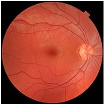

Retina Evaluation
The retina is the third and inner coat of the eye which is a light-sensitive layer of
tissue. The optics of the eye create an image of the visual world on the retina (through the cornea
and lens), which serves much the same function as the film in a camera. Light striking the retina
initiates a cascade of chemical and electrical events that ultimately trigger nerve impulses. These
are sent to various visual centres of the brain through the fibres of the optic nerve.

Some Common Retinal Disease or medical conditions
- Age Related Macular degeneration (ARMD)
- Retinitis pigmentosa
- Retinitis
- Diabetic retinopathy
- Retinopathy
- Epiretinal membrane
- Macular hole
- Retinal degeneration
- Branch/Central retinal vein occlusion
- Macular edema
- Floater
- Usher syndrome
- Retinoblastoma
- Uveitis
- Central serous retinopathy
- Leber's congenital amaurosis
- Near-sightedness
- Branch retinal vein occlusion
- Stargardt disease
- Branch/Central retinal artery occlusion
- Posterior vitreous detachment & Retinal detachment
- Retinopathy of prematurity
- Retinoschisis
- Vitelliform macular dystrophy
- Cone dystrophy
- Hypertensive retinopathy
- Choroideremia
- Retinal hemorrhage
- Leber's hereditary optic neuropathy
- Optic neuropathy
- Achromatopsia
- Familial exudative vitreoretinopathy
- Bietti's crystalline dystrophy
- Vitreomacular adhesion
- Presumed ocular histoplasmosis syndrome
- Lattice degeneration
- Photic retinopathy
- Maculopathy
Other Services Available at Netranjali:
- Squint Evaluation & Surgery
- Occuloplasty Surgery
- Amniotic Membrane Grafting
- Yag Laser Posterior Capsulotomy & Peripheral Iridectomy
- Comprehensive Eye Evaluation with Computerised eye tests
- Perimetry, topography & pachymetry evaluation
- Other Routine Services